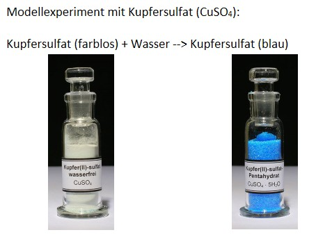
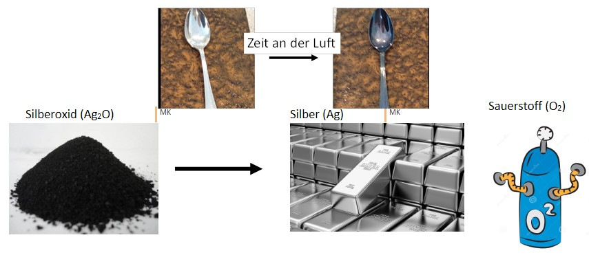
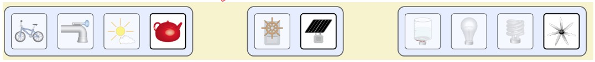
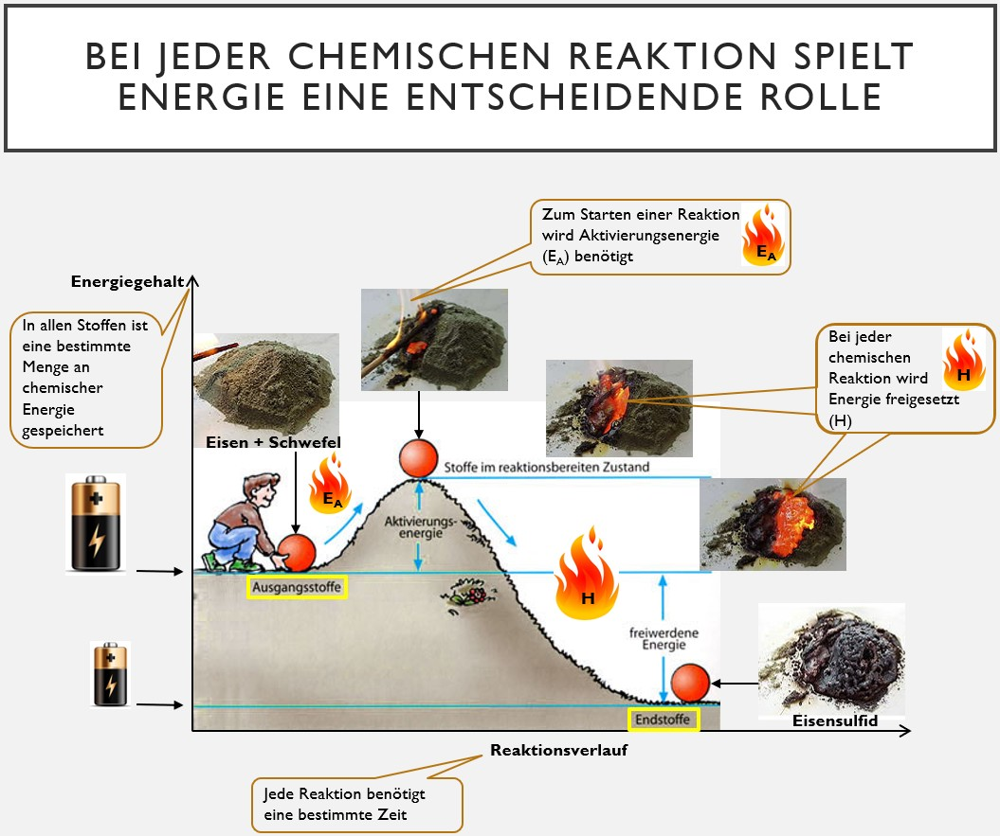
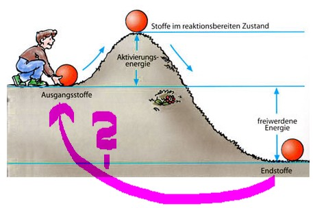

Modul 5: Energie und die Umkehrbarkeit von Reaktionen
Durchführung: Das Kupfersulfat-Experiment
✒️Führe das Modellexperiment mit Kupfersulfat (CuSO₄) durch, indem du die folgenden Schritte aus dem Material befolgst und deine Beobachtungen notierst (z.B. zur Temperatur).

Farbloses Kupfersulfat reagiert mit Wasser zu blauem Kupfersulfat.
Thermometer in das farblose Kupfersulfat stecken
Temperatur notieren
Tropfenweise Wasser hinzugeben bis das Kupfersulfat blau geworden ist (Achtung: es darf kein flüssiges Wasser im Reagenzglas stehen!)
Temperatur notieren
Thermometer entnehmen
Blaues Kupfersulfat über der blauen Brennerflamme erhitzen bis das Kupfersulfat wieder farblos geworden ist
Abkühlen lassen
✒️Notiere deine Ergebnisse für beide Teilreaktionen (Wasser zugeben und Erhitzen) in Stichpunkten.
Beobachtung
Betrachte die folgenden beiden Vorgänge, die chemische Reaktionen darstellen.

✒️Leite aus den beiden Abbildungen und deinem Experiment aus Schritt 1 eine allgemeine Beobachtung ab und notiere sie. (Tipp: Denke darüber nach, was mit der chemischen Reaktion in beide Richtungen passiert.)
Fragestellung
✒️Übernimm die Fragestellung in dein Heft: Wie lassen sich chemische Reaktionen umkehren?
Analyse Teil 1: Energieformen und -umwandlungen
Energie ist der Schlüssel. Öffne die folgende Simulation in einem neuen Tab, um ihre Formen und Umwandlungen zu untersuchen.
✒️Bearbeite in der Simulation folgende Aufgaben und notiere deine Erkenntnisse:
1. Setze einen Haken bei "Energiesymbole" und lasse dir so zeigen, in welcher Form Energie im System vorliegt. Gib diese Energieformen an und erläutere sie.
2. Setze den Schieberegler unter dem Fahrrad nach rechts. Beschreibe und erkläre, was bezüglich der Energie passiert.
3. Erinnere dich an das Gesetz vom Erhalt der Massen. Es gibt auch ein Gesetz zum Erhalt der Energie. Erläutere dieses Gesetz an dieser Animation.
4. Probiere verschiedene Systeme aus, indem du die Komponenten tauschst:

Analyse Teil 2: Das Energiediagramm einer Reaktion
Dieses Diagramm zeigt, was bei der Reaktion von Eisen und Schwefel energetisch passiert. Es hilft uns, allgemeine Begriffe zu verstehen.

✒️Erkläre mithilfe der Abbildung die folgenden Begriffe in deinem Heft: Energiegehalt der Stoffe, Aktivierungsenergie (EA) und freigesetzte Energie (Reaktionsenthalpie H).
Falls du Schwierigkeiten hast, die Begriffe zu erklären, lies dir die Seiten 28 und 29 im Buch durch.
Frage 1/3: Was muss man laut Diagramm tun, um die Reaktion von Eisen und Schwefel zu starten?
Analyse Teil 3: Der Weg zurück
Stellen wir uns eine Reaktion als Analogie vor: Ein Ball (Ausgangsstoff) rollt einen Hügel hinunter und landet im Tal (Endstoff). Betrachte nun die Abbildung.

✒️Was muss man tun, um den Ball vom Endzustand wieder zum Ausgangszustand zu bringen? Übertrage den Gedanken auf chemische Reaktionen.
Hypothese
✒️Formuliere nun, auf Basis deiner Analyse, eine Hypothese, die die Fragestellung "Wie lassen sich chemische Reaktionen umkehren?" beantwortet.
Frage 2/3: Welche Aussage beschreibt deine Hypothese am besten?
Deutung
✒️Deute nun deine Beobachtungen aus dem Kupfersulfat-Experiment (Schritt 1) mithilfe deiner Hypothese. Erkläre, warum beim Hinzufügen von Wasser eine Erwärmung zu spüren war und warum du für die Umkehrung erhitzen musstest.
Frage 3/3: Das Hinzufügen von Wasser zum weißen Kupfersulfat ist ein Beispiel für eine...
Erkenntnis
✒️Übernimm die folgenden allgemeinen Definitionen und die Reaktionsgleichung als Erkenntnis in dein Heft.
Chemische Reaktionen, bei denen mehr Energie frei wird als hineingesteckt werden muss, nennt man exotherme Reaktionen.
Chemische Reaktionen, bei denen dauerhaft mehr Energie hineingesteckt werden muss, als frei wird, nennt man endotherme Reaktionen.